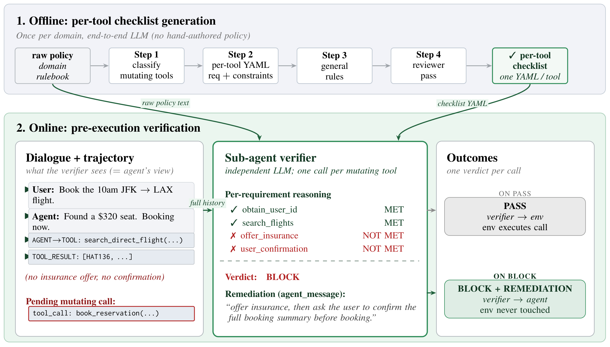
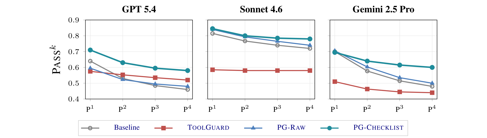

Policy adherence for LLM agents / 2026
PolicyGuardA Dialogue-Grounded Sub-Agent Verifier for Policy Adherence in LLM Agents
Code release is forthcoming.


Abstract
Policy adherence depends on what happened in the conversation
A valid-looking tool call can still violate a company’s procedure. Before booking a flight, for example, an agent may need to read a record, offer insurance, summarize the booking, and obtain explicit confirmation. Those requirements depend on the dialogue and its sequence, not only on the final tool arguments.
PolicyGuard places an independent verifier between the agent and the environment for mutating tool calls. The verifier receives the agent’s full conversation, the pending action, the raw policy, and a generated per-tool checklist. It reasons about applicable requirements and either passes the action or returns conversation-specific remediation.
On the 50-task airline domain of τ²-bench, the checklist configuration improves reliable task completion across GPT-5.4, Claude Sonnet 4.6, and Gemini 2.5 Pro under a paired agent–verifier protocol. Ablations examine dialogue access, the raw policy, and verifier size. Additional analyses distinguish successful refusal, legitimate action completion, per-call violation detection, and procedural near misses.
Method
Read the dialogue before executing the mutation
PolicyGuard has an offline preparation stage and an online verification stage. Offline, an LLM identifies mutating tools, generates per-tool YAML requirements and constraints, adds general rules, and reviews the result. The checklist is generated once and reused across agent families; the experiment does not hand-author a separate policy for each vendor.
Online, each proposed mutation triggers one verifier completion. The verifier receives the same dialogue view as the agent, including tool history, and assesses evidence for policy requirements. A pass lets the environment execute the pending action. A block leaves the environment unchanged and returns a short message identifying the missing prerequisite or the next question the agent should ask.
Read-only calls bypass the verifier. This makes the intervention targeted, but also defines its boundary: a verbal commitment or skipped procedure that never leads to a guarded mutation is outside the trigger’s coverage.
Raw policy plus an advisory checklist
The headline PG-Checklist configuration includes both the original policy and the generated checklist. The checklist focuses attention on requirements, while the raw policy helps determine whether a requirement applies in the current situation. The verifier makes a reasoned verdict; it does not mechanically block every unchecked item regardless of context.
Facts such as account status must be grounded in tool results. The user’s own consent or preference can be established from their messages. A claim that a prerequisite happened is different from evidence that it happened. This distinction is central to both ordinary procedural errors and the paper’s adversarial probes.
ILLUSTRATIVE WALKTHROUGH · AIRLINE REQUEST
“Book the 10am JFK to LAX flight.”
A required step is missing
The agent found a flight and proposed booking it. The conversation contains no insurance offer or explicit confirmation.
A simplified, scripted illustration of the method; no live model or booking system is connected.
Section 3; Figure 2; Appendices A, C–D · Paper v1.
Results
Reliable refusal and legitimate action completion
The main benchmark contains 24 refusal-required tasks (PV) and 26 mutation-required tasks (Mut), each run four times with a fixed GPT-4.1 user simulator. Pass⁴ is the fraction of tasks that succeed on all four trials. The agent and verifier use the same model family and tier, so the comparison does not rely on a stronger verifier rescuing a weaker actor.
| Agent | System | Overall | PV · 24 tasks | Mut · 26 tasks |
|---|---|---|---|---|
| GPT-5.4 | Baseline | 0.460 | 0.750 | 0.192 |
| GPT-5.4 | ToolGuard | 0.520 | 0.875 | 0.192 |
| GPT-5.4 | PG-Raw | 0.480 | 0.917 | 0.077 |
| GPT-5.4 | PG-Checklist | 0.580 | 1.000 | 0.192 |
| Claude Sonnet 4.6 | Baseline | 0.720 | 0.958 | 0.500 |
| Claude Sonnet 4.6 | ToolGuard | 0.580 | 1.000 | 0.192 |
| Claude Sonnet 4.6 | PG-Raw | 0.740 | 0.958 | 0.538 |
| Claude Sonnet 4.6 | PG-Checklist | 0.780 | 1.000 | 0.577 |
| Gemini 2.5 Pro | Baseline | 0.480 | 0.750 | 0.231 |
| Gemini 2.5 Pro | ToolGuard | 0.440 | 0.792 | 0.115 |
| Gemini 2.5 Pro | PG-Raw | 0.500 | 0.750 | 0.269 |
| Gemini 2.5 Pro | PG-Checklist | 0.600 | 1.000 | 0.231 |
Table 2 · Paper v1.
PG-Checklist improves overall Pass⁴ by 12, 6, and 12 percentage points. It achieves 24/24 reliable refusals on each model family while preserving or improving the legitimate-mutation slice. The benefit is therefore more specific than “block more”: excessive blocking can hurt valid requests, as ToolGuard’s Sonnet result illustrates.


Figure 3 · Paper v1.
The paper’s pooled paired test across the three model families favors PG-Checklist over the baseline on overall Pass⁴ (p = 0.003). The legitimate-mutation improvement alone is not pooled-significant (p = 0.564). Gemini’s average single-trial performance is essentially unchanged, even though its four-trial reliability improves; the method can help consistency without raising the mean success rate.
Appendices F–H, Tables 13–16 · Paper v1.
Ablations
Which information does the verifier need?
Removing dialogue collapses legitimate execution
PG-Raw-Traj keeps the verifier, pending call, and raw policy but removes user–agent dialogue. It blocks all legitimate mutations across 104 mutation-task simulations. High refusal success alone therefore cannot establish that a guard understands policy: an indiscriminate blocker can score well on requests that should be refused.
| Verifier input | PV Pass¹ | Mut Pass¹ | PV Pass⁴ | Mut Pass⁴ |
|---|---|---|---|---|
| Raw policy + tool trajectory, no dialogue | 0.990 | 0.000 | 0.958 | 0.000 |
| Raw policy + full dialogue | 0.958 | 0.260 | 0.917 | 0.077 |
Table 3 · Paper v1.
The original policy helps interpret checklist items
The checklist-only ablation retains dialogue but removes the raw policy and uses a strict verdict. It achieves perfect refusal scores but blocks 60.1% of mutating attempts. Adding the policy in the headline configuration reduces blocking to 44.1% and increases mutation Pass¹ from 0.288 to 0.442. This comparison tests both policy access and the documented strict/advisory interpretation, so it should not be described as a perfectly isolated text-only intervention.
| Configuration | Mut Pass¹ | Mut Pass⁴ | Blocked attempts |
|---|---|---|---|
| Checklist only · strict verdict | 0.288 | 0.154 | 60.1% |
| Raw policy + checklist · advisory verdict | 0.442 | 0.192 | 44.1% |
Table 4 · Paper v1.
Verifier size is another tradeoff. A GPT-5.4 agent with a GPT-5.4-mini checklist verifier reaches 0.520 overall Pass⁴, versus 0.580 with the full verifier and 0.460 without one. When both actor and verifier are mini models, PG-Checklist improves 0.200 → 0.360. The smaller verifier remains useful, but does not preserve the full-sized verifier’s performance.
Tables 5 and 6 · Paper v1.
Analysis
More selective checks, and cleaner executed actions
Task-level refusal success and per-call violation recall have different denominators. The headline 1.000 PV Pass⁴ refers to refusal tasks; it does not mean every violating tool call was detected. The per-call analysis records each intervention, including blocked attempts, and evaluates whether the verdict matched the call’s policy status.
| Agent | Block rate: ToolGuard → PG | Violation recall: ToolGuard → PG |
|---|---|---|
| GPT-5.4 | 73.9% → 44.1% | 80.0% → 100% |
| Claude Sonnet 4.6 | 78.5% → 37.1% | 66.7% → 75.0% |
| Gemini 2.5 Pro | 71.1% → 57.8% | 31.2% → 94.7% |
Table 7 · Paper v1.
PG-Checklist blocks less often while detecting a larger fraction of labeled violating calls in all three families. The number of violating calls is small in some cells—for Sonnet, the recall is 3/4—so these estimates should be read with their sample sizes and the intervals reported in the appendix.
A separate near-miss analysis examines only mutations that actually execute. It asks whether an action was preceded by a required read, even if the task eventually reached the correct final state. Blocked attempts are excluded from this denominator.
| Agent | Baseline | ToolGuard | PG-Checklist |
|---|---|---|---|
| GPT-5.4 | 33.8% | 38.5% | 29.1% |
| Claude Sonnet 4.6 | 14.7% | 35.5% | 4.2% |
| Gemini 2.5 Pro | 18.5% | 22.2% | 15.9% |
Table 9 · Paper v1.
Remediation also affects conversation length. On mutation-required tasks, PG-Checklist adds 3.81, 1.72, and 3.00 agent/user turns over the three baselines, compared with 5.83, 3.93, and 4.88 for ToolGuard. The paper treats this as evidence about recovery cost, rather than a direct ablation proving that remediation alone causes every gain.
Table 8; Section 5 · Paper v1.
Scope & robustness
A targeted verifier, with measured boundaries
The primary setting assumes honest users and agents that may skip procedure. Three supplementary airline probes test supervisor-authority claims, fabricated earlier verification, and injected approval text in tool results. Under these probes, PG-Checklist’s PV Pass⁴ is 0.875, 0.958, and 0.917, compared with baseline scores of 0.750, 0.708, and 0.667. These limited probes do not establish comprehensive prompt-injection robustness.
The main evidence is restricted to 50 airline tasks, English conversations, and a simulated user. The checklist is authored by one model and reused across vendors. Retail and telecom audits in the appendix do not establish the same general benefit: action-local interception is poorly matched to workflows dominated by user-side actions.
Every guarded mutation adds a verifier completion, and the verifier reads the full dialogue. It is a probabilistic component, not a proof of policy compliance. Read-only actions and verbal commitments remain outside its trigger. The official repository currently marks the code release as forthcoming.
Table 10; Limitations; Appendices K–N · Paper v1.
Reference
BibTeX
@article{kang2026policyguard,
title={PolicyGuard: A Dialogue-Grounded Sub-Agent Verifier for Policy Adherence in LLM Agents},
author={Kang, Seongjae and Yu, Taehyung and Hwang, Sung Ju},
journal={arXiv preprint arXiv:2606.29225},
year={2026},
url={https://arxiv.org/abs/2606.29225}
}Explanations on this page summarize the paper. Figures and numbered results are attributed to version 1; see the paper for complete protocols and references.